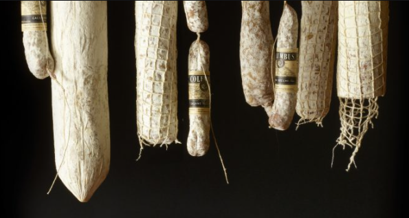
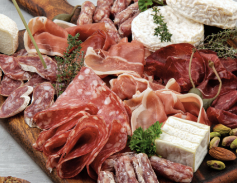

Types of Charcuterie
- Serrano Ham:Serrano ham is made from special pigs in Spain. It is actually a slightly less expensive version of Jamon Iberico de Bellota which can be cured for years!
- Salami:Salami is one of the most popular types of charcuterie. It is generally sweeter and aged.
- Bresaola:Bresaola is an air dried, salted beef. It is aged and can sometimes have a smoky flavor.
- Prosciutto:Prosciutto is an extremely popular type of charcuterie. Prosciutto is silky and is served best sliced paper thin. In Italy they say you should be able to read a newspaper through it!
- Speck:Speck is very similar to prosciutto but instead of curing it, it is smoked. Often times producers will age the prosciutto and then smoke it to turn it into speck.
- Mortadella:Mortadella is a cooked sausage made from different parts of pork. Some people consider it similar in texture to bologna. Mortadella also occasionally has the signature pistachio nuts throughout the meat.

